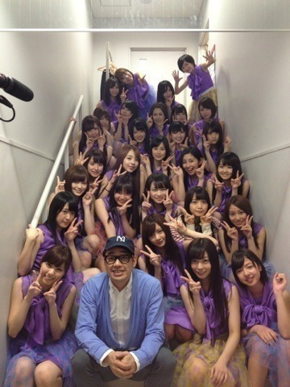

| 2013/05 08 Wed | 頑張り時(´>∀<｀)ゝ |
ちはるーむへようこそ(｡･o･｡)ﾉ
今日は明田川に立候補したんですけど
残念でした(´._.`)
私に投票してくれたよ、って方、ほんとに嬉しいです！
ありがとうございます( ´^` )
自分なりには全力でやったつもりだったんですけど
セリフを噛んでしまったり
特技の書道の ありがとう=喜 を表現するのが難しく
わかりにくかったと思うので
反省してます。
舞台だからこそ大きく、
わかりやすくしなければ伝わらないのに。
それに気づかされました。
学びました。
でも、そーゆーこととか、
テレビやドラマとは違うからこそ
舞台ならではの楽しいことがたくさんあって
辛いこともいっぱいあるけど、
だけど
いま楽しくてしょうがないです(o^^o)
スタッフさんや家族、そしてコメントしてくださっている皆さんに
活き活きしてるね！楽しそうだね！
って言われますがその通りです(｡･o･｡)ﾉ
ずっと女優さんになりたかったけど
そういう機会もなくて、口だけで...
だけど今回、やっとたくさん学ぶことがあって。
学ぶ場所があって。
嬉しい限りです\( ^ω^ )/
少しづつだけど
演技よかったよ！と評価をもらえるようになったので
その期待に応えられるように、評価を裏切らないように
明日からも突っ走っていく！！！
ファイティングウーマン！
最近の口癖！
今日の私服っ！
これやっ！
ねね意識してみた♡
ちょっとかっこいい女風d=(^o^)=b
最近はパンツスタイルにハマってるんだよね～\( ^ω^ )/
あとは白Tシャツもよく着る！！
さりげなくハマってる



そして設楽さん、今日はありがとうございました！！！
ふう
明日からも学校だけど
公演も続くし頑張ろう！！
ここが頑張り時さd=(^o^)=b！
おやすみ
ばいるんっ
るんるんっ
ちはるんっ
(´>∀<｀)ゝ
コメント(122)
2013/05/08 00:06